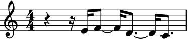
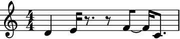
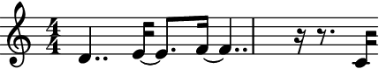

auxjad.Shuffler¶
-
class
auxjad.Shuffler(container: abjad.core.Container.Container, *, output_single_measure: bool = False, disable_rewrite_meter: bool = False, force_time_signatures: bool = False, omit_time_signatures: bool = False)¶ Takes an input
abjad.Containerand shuffles its leaves. It can shuffle both leaves as well as pitches; it also can roate pitches. When shuffling or rotating pitches only, tuplets are allowed. Tuplets are not supported when shuffling leaves.Calling the object will output a shuffled container.
>>> container = abjad.Container(r"c'4 d'4 e'4 f'4") >>> shuffler = auxjad.Shuffler(container) >>> music = shuffler() >>> staff = abjad.Staff(music) >>> abjad.f(staff) \new Staff { \time 4/4 d'4 c'4 f'4 e'4 }

To get the result of the last operation, use the property
current_container.>>> music = shuffler.current_container >>> staff = abjad.Staff(music) >>> abjad.f(staff) \new Staff { \time 4/4 d'4 c'4 f'4 e'4 }

Calling the object outputs the same result as using the method
shuffle_leaves().>>> container = abjad.Container(r"c'4 d'4 e'4 f'4") >>> shuffler = auxjad.Shuffler(container) >>> music = shuffler.shuffle_leaves() >>> staff = abjad.Staff(music) >>> abjad.f(staff) \new Staff { \time 4/4 f'4 c'4 e'4 d'4 }

This class has many keyword arguments, all of which can be altered after instantiation using properties with the same names as shown below.
>>> container = abjad.Container(r"\time 3/4 c'4 d'4 e'4 |" ... r"\time 2/4 f'4 g'4 |" ... ) >>> shuffler = auxjad.Shuffler(container, ... output_single_measure=False, ... disable_rewrite_meter=False, ... force_time_signatures=False, ... omit_time_signatures=False, ... ) >>> shuffler.output_single_measure False >>> shuffler.disable_rewrite_meter False >>> shuffler.force_time_signatures False >>> shuffler.omit_time_signatures False >>> shuffler.output_single_measure = True >>> shuffler.disable_rewrite_meter = True >>> shuffler.force_time_signatures = True >>> shuffler.omit_time_signatures = True >>> shuffler.output_single_measure True >>> shuffler.disable_rewrite_meter True >>> shuffler.force_time_signatures True >>> shuffler.omit_time_signatures True
If
output_single_measureis set toTrue, then the whole container is output as a single measure, having its time signature rewritten.>>> container = abjad.Container(r"\time 3/4 c'4 d'4 e'4 |" ... r"\time 2/4 f'4 g'4" ... ) >>> shuffler = auxjad.Shuffler(container, ... output_single_measure=True, ... ) >>> music = shuffler() >>> staff = abjad.Staff(music) >>> abjad.f(staff) \new Staff { \time 5/4 f'4 d'4 e'4 g'4 c'4 }

If
disable_rewrite_meteris set toTrue, then the automatic behaviour of rewriting the leaves according to the meter is disabled.>>> container = abjad.Container(r"\time 3/4 c'16 d'4.. e'4 |" ... r"\time 2/4 f'2" ... ) >>> shuffler = auxjad.Shuffler(container, ... output_single_measure=True, ... disable_rewrite_meter=True, ... ) >>> music = shuffler() >>> staff = abjad.Staff(music) >>> abjad.f(staff) \new Staff { \time 5/4 d'4.. f'2 c'16 e'4 }

The first call to the instance will add the correct time signature to the first leaf. Subsequent calls will only add it if its necessary, such as when there is a time signature change in some bar in the container.
>>> container = abjad.Container(r"\time 3/4 c'16 d'4.. e'4 | r4 f'2") >>> shuffler = auxjad.Shuffler(container) >>> music = shuffler() >>> staff = abjad.Staff(music) >>> abjad.f(staff) \new Staff { \time 3/4 d'4.. e'16 ~ e'8. f'16 ~ f'4.. r16 r8. c'16 }
>>> music = shuffler() >>> staff = abjad.Staff(music) >>> abjad.f(staff) \new Staff { c'16 e'8. ~ e'16 f'4.. ~ f'16 r8. r16 d'4.. }

It is possible to force time signatures on every call using either optional keyword argument
force_time_signatures.>>> container = abjad.Container(r"\time 3/4 c'16 d'4.. e'4 | r4 f'2") >>> shuffler = auxjad.Shuffler(container, ... force_time_signatures=True, ... ) >>> music = shuffler() >>> staff = abjad.Staff(music) >>> abjad.f(staff) \new Staff { \time 3/4 d'4.. r16 r8. c'16 f'2 e'4 }

>>> music = shuffler() >>> staff = abjad.Staff(music) >>> abjad.f(staff) \new Staff { \time 3/4 c'16 e'8. ~ e'16 f'4.. ~ f'16 r8. r16 d'4.. }

To disable time signatures altogether, initialise this class with the keyword argument
omit_time_signaturesset toTrue(default isFalse), or change theomit_time_signaturesproperty after initialisation.>>> container = abjad.Container(r"\time 3/4 c'16 d'4.. e'4 | r4 f'2") >>> shuffler = auxjad.Shuffler(container, ... omit_time_signatures=True, ... ) >>> music = shuffler() >>> staff = abjad.Staff(music) >>> abjad.f(staff) \new Staff { d'4.. e'16 ~ e'8. f'16 ~ f'4.. r16 r8. c'16 }

>>> shuffler.omit_time_signatures True >>> shuffler.omit_time_signatures = False >>> shuffler.omit_time_signatures False
To output several shuffled containers at once, use the
output_nmethod, inputting the desired number of iterations.>>> container = abjad.Container(r"\time 2/4 c'16 d'4.. | r4 e'8. f'16") >>> shuffler = auxjad.Shuffler(container) >>> music = shuffler.output_n(3) >>> staff = abjad.Staff(music) >>> abjad.f(staff) \new Staff { \time 2/4 d'4.. f'16 c'16 e'8. r4 d'4.. e'16 ~ e'8 f'16 r16 r8. c'16 r4 d'4 ~ d'8. f'16 c'16 e'8. }

To shuffle only pitches, keeping the durations of the leaves as they are, use the method
shuffle_pitches(). It handles both notes and chords. Rests will remain at their current location.>>> container = abjad.Container(r"\time 3/4 c'16 d'4.. | r4 e'8. f'16") >>> shuffler = auxjad.Shuffler(container) >>> music = shuffler.shuffle_pitches() >>> staff = abjad.Staff(music) >>> abjad.f(staff) \new Staff { \time 3/4 e'16 c'4.. r4 d'8. f'16 }
When dealing with pitches, it is possible to use containers containing tuplets. And similarly to the method
output_n(), to output several containers with shuffled pitches, useoutput_n_shuffled_pitches().>>> container = abjad.Container(r"\times 2/3 {\time 5/4 c'4 d'2}" ... r"r4 e'4. f'8" ... ) >>> shuffler = auxjad.Shuffler(container) >>> music = shuffler.output_n_shuffled_pitches(3) >>> staff = abjad.Staff(music) >>> abjad.f(staff) \new Staff { \times 2/3 { \time 5/4 f'4 e'2 } r4 d'4. c'8 \times 2/3 { d'4 c'2 } r4 f'4. e'8 \times 2/3 { d'4 f'2 } r4 c'4. e'8 }

To rotate pitches, use the
rotate_pitches()method.>>> container = abjad.Container(r"\time 3/4 c'16 d'4.. | r4 e'8. f'16") >>> shuffler = auxjad.Shuffler(container) >>> music = shuffler.rotate_pitches() >>> staff = abjad.Staff(music) >>> abjad.f(staff) \new Staff { \time 3/4 d'16 e'4.. r4 f'8. c'16 }

This method can take two optioanl keyword arguments:
anticlockwise, set toFalseby default, andn_rotations, set to 1 by default. The first defines the direction of the rotation, while the later sets the number of rotations applied.>>> container = abjad.Container(r"\time 3/4 c'16 d'4.. | r4 e'8. f'16") >>> shuffler = auxjad.Shuffler(container) >>> music = shuffler.rotate_pitches(anticlockwise=True, n_rotations=2) >>> staff = abjad.Staff(music) >>> abjad.f(staff) \new Staff { \time 3/4 e'16 f'4.. r4 c'8. d'16 }

Similarly to the method
output_n(), to output several containers with rotated pitches, useoutput_n_rotated_pitches().>>> container = abjad.Container(r"\times 2/3 {\time 5/4 c'4 d'2}" ... r"r4 e'4. f'8" ... ) >>> shuffler = auxjad.Shuffler(container) >>> music = shuffler.output_n_rotated_pitches(3) >>> staff = abjad.Staff(music) >>> abjad.f(staff) \new Staff { \times 2/3 { \time 5/4 d'4 e'2 } r4 f'4. c'8 \times 2/3 { e'4 f'2 } r4 c'4. d'8 \times 2/3 { f'4 c'2 } r4 d'4. e'8 }
-
__init__(container: abjad.core.Container.Container, *, output_single_measure: bool = False, disable_rewrite_meter: bool = False, force_time_signatures: bool = False, omit_time_signatures: bool = False)¶ Initialize self. See help(type(self)) for accurate signature.
Methods
__init__(container, *, …)Initialize self. output_n(n)output_n_rotated_pitches(n, *, n_rotations, …)output_n_shuffled_pitches(n)rotate_pitches(*, n_rotations, anticlockwise)shuffle_leaves()shuffle_pitches()Attributes
current_containerdisable_rewrite_meterforce_time_signaturesomit_time_signaturesoutput_single_measure-